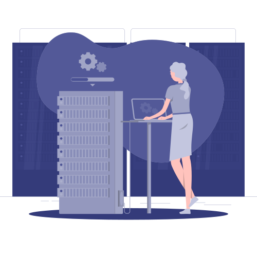

Lösungen für messbare Ergebnisse.
Von der Analyse über Architektur und Umsetzung bis zum Betrieb: Wir verbinden Microsoft-Technologien, KI und Softwareentwicklung zu tragfähigen Lösungen für Ihre Organisation.
Enterprise-KI & Agenten
Copilot und eigene Agenten, MCP-Werkzeugintegration und Retrieval-Augmented Generation, verankert in Ihren eigenen berechtigungsgeschützten Inhalten, Cloud oder souverän on-premises.
Mehr erfahrenGeschäftsprozess-Automatisierung
Analysieren, vereinfachen, automatisieren und integrieren Sie die Prozesse, die Ihre Mitarbeitenden täglich wiederholen.
Mehr erfahrenMicrosoft 365 & Digital Workplace
Migration, Adoption und Governance über SharePoint, Teams, OneDrive, Exchange und Power Platform.
Mehr erfahrenKI-gestütztes Dokumentenmanagement
Vollständig KI-integriertes DMS: OCR, automatische Klassifikation, Extraktion und Suche in natürlicher Sprache, mit Cloud-KI oder souveränen On-Premises-Modellen.
Mehr erfahrenMicrosoft Security & Governance
Drei eigene Assessment-Werkzeuge, sieben vorkonfigurierte Workshops, Pilotprojekte und vollständiger Rollout.
Mehr erfahrenIndividualsoftware & Digital Commerce
Jede Anwendung, jede Integration, jede Umgebung: öffentlich oder intern, Cloud, on-premises oder hybrid. KI-gestützt entwickelt.
Mehr erfahrenÜber die Projektumsetzung hinaus

Microsoft-365-Support & Managed Services
SLA-basiertes Microsoft-365-Incident- und Anfragemanagement oder vollständige Tenant-Administration, Governance und kontinuierliche Verbesserung.
Mehr erfahrenMicrosoft-Lizenzierung
Lizenzberatung, Beschaffung und Lifecycle-Management, mit der Architekturexpertise, um Ihnen zu sagen, was Sie wirklich brauchen.
Mehr erfahrenEngineering-Kapazität
KI-gestützte Teamverstärkung, dedizierte Teams, Projektumsetzung und Wartung aus Tunesien und Frankreich, in mitteleuropäischer Zeit.
Mehr erfahren